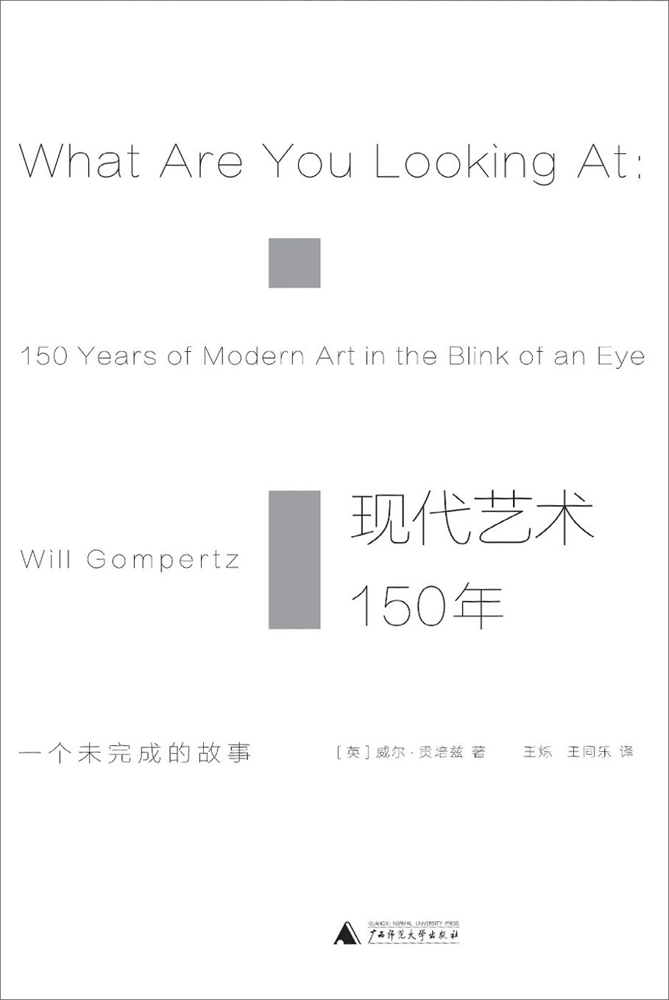

《现代艺术150年》

总体观点
英国BBC前艺术总编、伦敦泰特美术馆前策展人威尔·贡培兹，以机智幽默、充满八卦与深层洞见的笔触，写就了这本全球现象级的现代艺术通识经典。
核心命题：现代艺术看似令人费解（“这玩意我四岁儿子也会画”），实则是150年来先锋艺术家对工业革命、世界大战、消费主义与科技变革的一连串惊险激进的精神回应。每一场流派革命，都是后人对前人教条的无情反叛与新观念突围。
杜尚的《泉》标志着艺术从“视网膜愉悦的手艺”彻底跃升为“挑战认知的观念脑力游戏”。现代艺术不是用来崇拜的现成答案，而是用来拓展人类思维边界的锋利提问。
核心观点 共 7 条
-
1. 现代艺术不是胡乱涂抹，而是对既有陈腐边界的一次次勇敢突围
每一个看似古怪的艺术流派，都是先锋艺术家在时代重大剧变面前，对前一代僵化学院教条发起的技术与观念起义。
例 ·莫奈在落选者沙龙上展出粗糙笔触的《日出·印象》，被保守学院派讥讽为半成品，却开启了走出画室捕捉真实自然光影的新时代。 -
2. 摄影术的发明倒逼绘画彻底摆脱“画得像”的古典再现枷锁
相机以极低成本接管了精确记录现实的功能，逼迫画家必须去探索摄影无法捕捉的情绪、潜意识与主观观念世界。
例 ·高更与梵高不再追求人体比例的绝对精确，而是运用浓烈奔放的原色与扭曲笔触，直接传达内心的狂热信仰与痛苦挣扎。 -
3. 保罗·塞尚是所有现代艺术之父，重塑了观察世界的几何原点
塞尚将大自然万物提炼解构为圆柱体、球体与圆锥体，打破单一点透视，直接孕育了毕加索立体主义与现代抽象艺术。
例 ·塞尚面对圣维克多山画了数十次，不再画肉眼看到的浮光掠影，而是通过几何色块的严谨咬合构筑永恒坚实的画面骨架。 -
4. 杜尚的《泉》彻底改写了世界艺术史规则：观念重于技巧
杜尚把商店买来的男用小便池倒置签名送展，石破天惊地宣告：艺术不再是工匠的制造技艺，而是艺术家的思想选择与命名。
例 ·杜尚证明哪怕一件工业流水线现成品，只要艺术家赋予它全新的思考语境，它就能激发人类对艺术本质最深刻的哲学质询。 -
5. 抽象艺术不是无病呻吟，而是剔除具象杂质提炼精神纯粹共鸣
康定斯基与蒙德里安发现，点线面与纯色彩就像音乐音符一样，无需依赖具象故事便能直接敲击人类灵魂深处。
例 ·蒙德里安在工作室里苦心推敲黑线粗细与红黄蓝纯色块面积比例，在画布上追寻超越现实混乱的宇宙纯粹和谐秩序。 -
6. 波普艺术消弭了高雅艺术与大众平民消费社会的鸿沟
二战后大众消费主义崛起，安迪·沃霍尔将超市罐头、可乐瓶与好莱坞明星拉入艺术圣殿，高呼商业成功就是最高级的艺术。
例 ·沃霍尔用丝网印刷批量生产数百张一模一样的金汤宝浓汤罐头，打破了古典艺术孤本神话，精准映射出批量复制时代的工业本质。 -
7. 全球艺术中心从巴黎西移至纽约是地缘政治与资本力量的必然产物
二战导致欧洲艺术家大批流亡美国，中情局与华尔街资本合力推举波洛克等抽象表现主义巨匠，树立起自由世界文化灯塔。
例 ·波洛克将巨大画布铺在地上用颜料桶挥洒滴漏（滴画法），其狂放不羁的形式被美国冷战文化战略打造成个人自由的终极象征。
全书结构 6 部分
-
第一至五章：走向真实与现代生活（泉、前印象派、印象派、后印象派与塞尚）
讲述艺术家如何冲破古典学院派窒息的教条，走出画室捕捉自然光影瞬间，塞尚用几何形体构筑现代绘画新基石。
例 ·莫奈在《日出·印象》中用飞快凌乱的彩色笔触描绘勒阿弗尔港口的雾霭晨光，古典画评家讥讽其为粗糙半成品，却引爆了现代艺术革命。 -
第六至八章：野性的呐喊与立体透视（野兽派、立体主义与未来主义）
展现马蒂斯用纯粹原色释放情感野性，毕加索打破单一点透视重构多维空间，以及意大利未来主义对工业速度的狂热赞美。
例 ·毕加索在《亚威农少女》中融合非洲木雕面具，将女性身体撕裂为破碎的多角度几何面，彻底颠覆了文艺复兴五百年来的单点透视法则。 -
第九至十二章：抽象的诞生与形式秩序（康定斯基、俄国构成主义、蒙德里安与包豪斯）
探索色彩与音乐的通感共鸣，至上主义将绘画简化为几何原形，蒙德里安用红黄蓝网格与包豪斯共同开启现代工业设计新纪元。
例 ·蒙德里安在工作室里苦心推敲黑线与红黄蓝纯色块的比例，剔除一切自然物象叙事，将宇宙秩序提炼为纯粹的形式平衡。 -
第十三至十四章：颠覆常识与潜意识梦境（达达主义与超现实主义）
经历一战浩劫后，杜尚用小便池嘲弄所谓“艺术神圣性”，达利与玛格利特借助弗洛伊德潜意识理论打开梦境奇幻世界。
例 ·杜尚从商店买来一个现成男用陶瓷小便池签名署名《泉》送去展出，石破天惊地宣布：艺术不再关乎手工技巧，而关乎艺术家的观念选择。 -
第十五至十六章：战后西移与商业狂潮（抽象表现主义与波普艺术）
二战后全球艺术中心从巴黎移至纽约，波洛克以滴画挥洒潜意识，安迪·沃霍尔用丝网印刷金汤宝罐头将艺术彻底拉入消费主义时代。
例 ·安迪·沃霍尔批量印制玛丽莲·梦露肖像与可口可乐瓶，打破高雅艺术与平民消费品的界限，宣告“商业成功才是最高级的艺术”。 -
第十七至二十章：观念蔓延与当代名利场（观念艺术、极简主义与今日艺术）
从极简主义冷峻几何雕塑到激流派行为艺术，再到达明安·赫斯特与班克西在资本名利场中玩转的当代艺术新游戏。
例 ·达明安·赫斯特将一条浸泡在福尔马林玻璃箱里的虎鲨命名为《生者对死者无动于衷》，在国际拍卖行拍出千万天价，观念成为资本炒作的核心标的。